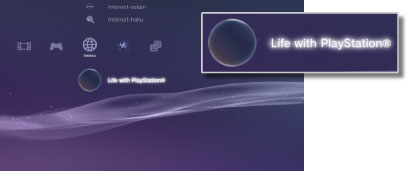

Verkko > Life with PlayStation®
Life with PlayStation®
Life with PlayStation® tarjoaa yksilöllisille kanaville järjestettyä dynaamista verkkosisältöä, jota voi selata ajan ja paikan perusteella. Voit valita itsellesi mieleistä sisältöä kanavia valitsemalla.
Life with PlayStation® -ohjelmaa käyttämällä osallistut automaattisesti Folding@home™-projektiin, joka on Stanfordin yliopiston organisoima hajautetun laskennan projekti.
Life with PlayStation®-ohjelman käynnistäminen
Life with PlayStation® -palvelun käyttäminen edellyttää, että Life with PlayStation® -sovellus ladataan ja asennetaan. Lataa sovellus valitsemalla  (Verkko) -kohdasta
(Verkko) -kohdasta  (Life with PlayStation®). Viimeistele asennus näytön ohjeiden mukaisesti.
(Life with PlayStation®). Viimeistele asennus näytön ohjeiden mukaisesti.

Vihjeitä
- Life with PlayStation® -palvelun asentaminen edellyttää, että PS3™-järjestelmän kiintolevyllä on vähintään 500 Mt vapaata tilaa.
- Jos
 (Folding@home™) -kuvake on näkyvissä, Folding@home™-sovellus täytyy päivittää, ennen kuin se päivitetään Life with PlayStation® -sovellukseksi. Valitse (Folding@home™) -vaihtoehto (Verkko) -kohdasta ja päivitä Folding@home™-sovellus sitten näytön ohjeiden mukaan. Valitse (Folding@home™) -vaihtoehto (Verkko) -kohdasta uudelleen ja päivitä sovellus Life with PlayStation® -sovellukseksi näytön ohjeiden mukaan.
(Folding@home™) -kuvake on näkyvissä, Folding@home™-sovellus täytyy päivittää, ennen kuin se päivitetään Life with PlayStation® -sovellukseksi. Valitse (Folding@home™) -vaihtoehto (Verkko) -kohdasta ja päivitä Folding@home™-sovellus sitten näytön ohjeiden mukaan. Valitse (Folding@home™) -vaihtoehto (Verkko) -kohdasta uudelleen ja päivitä sovellus Life with PlayStation® -sovellukseksi näytön ohjeiden mukaan.
Life with PlayStation® -sovelluksen sulkeminen
Voit sulkea Life with PlayStation® -sovelluksen painamalla langattoman ohjaimen PS-näppäintä ja valitsemalla  (Lopeta) kohdassa (Verkko).
(Lopeta) kohdassa (Verkko).
Ohjelman automaattinen käynnistys
Life with PlayStation® käynnistyy automaattisesti, jos PS3™-järjestelmää ei ole käytetty määritettyyn aikaan. Valitse (Verkko) ja sitten (Life with PlayStation®), paina  -näppäintä ja valitse asetusvalikosta [Automaattinen käynnistys].
-näppäintä ja valitse asetusvalikosta [Automaattinen käynnistys].
| Pois päältä | Life with PlayStation®-ohjelman automaattinen käynnistys ei ole käytössä. |
|---|---|
| 10 minuutin jälkeen | Life with PlayStation®-ohjelma käynnistetään, kun järjestelmää ei ole käytetty 10 minuuttiin. |
| 20 minuutin jälkeen | Life with PlayStation®-ohjelma käynnistetään, kun järjestelmää ei ole käytetty 20 minuuttiin. |
| 30 minuutin jälkeen | Life with PlayStation®-ohjelma käynnistetään, kun järjestelmää ei ole käytetty 30 minuuttiin. |
Vihje
[Automaattinen käynnistys] ei ole käytössä, kun PS3™-järjestelmä ei ole yhteydessä Internetiin.
Life with PlayStation®-ohjelman poistaminen
Life with PlayStation®-ohjelman voi poistaa kiintolevyltä. Valitse (Verkko) ja sitten (Life with PlayStation®), paina -näppäintä ja valitse asetusvalikosta [Poista].
Vihje
Vaikka ohjelma poistetaan, (Life with PlayStation®) -kuvaketta ei poisteta XMB™-valikosta.
Jos valitset kuvakkeen, Life with PlayStation®-ohjelma asennetaan uudestaan.